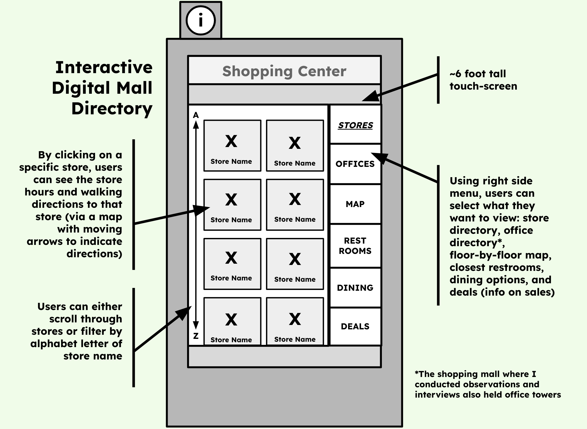
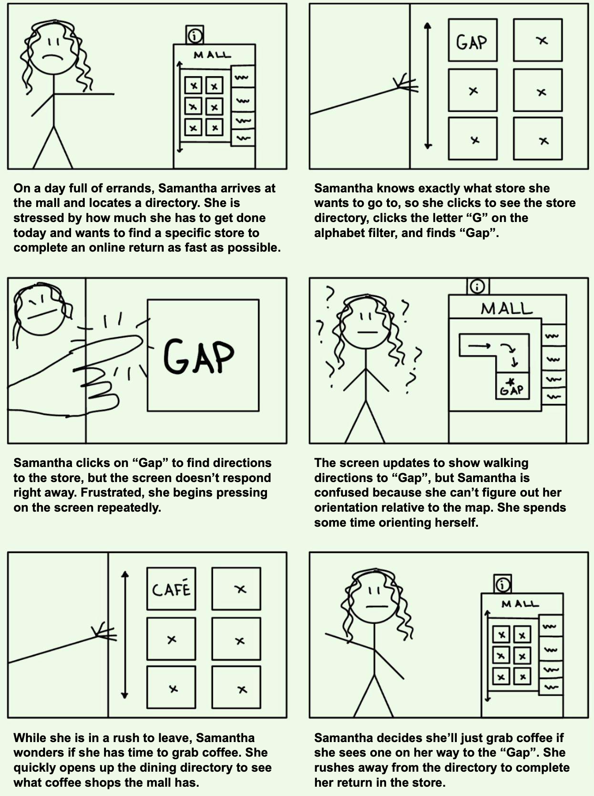

Context: Looking at Digital Mall Directories
As someone who has always loved shopping malls, I jumped at the chance to examine an aspect of shopping malls from a user
experience perspective. My goal was to examine one interface in-depth, conducting UX research, crafting personas of archetypal users,
and creating a storyboard demonstrating one persona's use of the interface from start to finish.
I turned my attention to digital mall directories:

The above sketch highlights the key features of a digital mall directory. This interface aims to improve upon non-digital poster-style mall directories and help users find their way around a mall and discover mall features.
A touchscreen makes it possible for users to look at store, office, and dining directories, as well as locate restrooms, see a general map, and find information on current store promotions. The directory also allows users to obtain directions to
a specific mall tenant.
UX Research: Observations & Interviews
Within a shopping center located in metropolitan Boston, Massachusetts, I conducted observations of people using the digital mall directory, obtaining the following key insights:
-
Some users explored one item from the right menu (ex: "Stores"), while others browsed through
several of the menu items (ex: "Stores", "Restaurants", and "Dining")
-
All observed users took a substantial pause and examined the screen after pulling up walking directions
to their selected destination
-
Some users scrolled through the list of shops and restaurants, while others immeadiately
filtered by alphabet letter upon opening up the main directory
-
The amount of time users spent engaging with the dirctory varied considerably, from less than a minute to over five minutes
-
Some users would tap the directory once and wait for the screen to change, while others would tap repeatedly if the directory did not respond right away
-
Some users were alone, while others looked at the directory with people they came to the mall with
To gain a deeper understanding of the users of digital mall directories and their user experience, I posed the following questions in interviews with people who had just finished the using the device:
-
What was the reason you began using the mall directory just now?
-
Can you show me the steps you took to find what you were looking for?
-
How easy or difficult was it to find what you were looking for?
-
Did you end up using the directory for any purpose beyond what you originally planned on?
-
Are there any features of the directory that you found challenging to use?
-
The mall directory you just used is referred to as a digital directory. Have you ever used a non-digital mall directory? (If yes:) Do you have a preference between digital and non-digital mall directories? Why?
-
Are there any features you wish the directory had?
From interviews, I gained the following key insights:
-
The reason users engaged with the directory differed, from wanting to find specific stores to locating the
nearest restroom to browsing the entire range of shopping and dining options
-
Users found the animated map with moving arrows to indicate walking directions useful, but some still
struggled with orienting themselves and wished the directions were clearer
-
Some users ended up using the directory for a reason other than their original purpose, such as finding a spot to
grab coffee when they originally just wanted to find a single store
-
One of the users was frustrated that the dining options could not be filtered by type
of dining (ex: sit-down resaurant, fast food, coffee shop)
-
Users generally preferred digital to non-digital directories, but one of the users said they usually just look up the stores of a mall on their phone
Personas: Examining Two Representative Users
Using my observations and interview results, I crafted two personas to represent two archetypal users of digital mall directories.
1) One-Stop Samantha is busy with errands today and stopped at the mall to quickly return an item she purchased online, though she
considers grabbing coffee quickly if she has time.
Thinks:
-
Ugh, where is the mall directory?
-
Wait, are these directions telling me to go left or right?
-
I can do this in 15 minutes, right?
-
I wonder how long the line at Starbucks is.
|
Feels:
-
Anxious about how many errands she has to do today
-
Frustrated she can't orient herself faster using the directory map
-
Thankful she didn't have to wait for someone to finish using the directory before she could use it
-
Eager to check this online return off her to-do list
|
Says:
-
Excuse me, which way is the Macy's wing?
-
Do you know where the escalators are?
-
About how long do you think it will take for my coffee to be ready?
|
Does:
-
Immeadiately finds a specific store on the directory and gets walking directions to it
-
Taps the screen multiple times if it doesn't respond right away
-
Looks at the map on the screen and then around her several times to orient herself
-
Looks at the "Dining" tab to see if there's a coffee shop near the store she's going to
|
Samantha is motivated by efficiency and wants to complete her return ASAP, leading to the following interface challenges: using the mall directory to find a single store quickly and then obtaining clear
directions to that store, also quickly. Samantha represents an important group of directory users, since many people come to malls with a specific goal and want to complete the goal in the shortest amount of time. Directories must serve these users properly.
2) Leisurely Liam came to the mall with friends to have a relaxed day of shopping and eating. Today, he wants to treat himself.
Thinks:
-
Yay, I didn't realize this mall had a Uniqlo!
-
There should be a way to filter restaurants to sit-down only places.
-
A relaxing mall-day is just what I needed right now.
-
Will three hours of parking be enough?
|
Feels:
-
Happy and at peace to have a day at the mall, away from work
-
Curious what shops and restaurants the mall has
-
Confused on whether one of the dining options listed is a snack shop or full-service restaurant
|
Says:
-
Why don't we check out that store too?
-
This mall is so pretty, isn't it?
-
Oooh, there's a directory right over here!
-
Which stores do you think have the best clothes for fall?
|
Does:
-
Takes his time browsing the store and dining options of the mall
-
Shows items on the directory to the friends he is with
-
Goes from "Shopping" to "Dining" tab and back to "Shopping" to look again
-
Has the store directory pulled up on his phone too
|
Liam wants to go to a few specific stores, but also wants to browse the mall's many shopping and dinding options. His interface challenges include being able to browse all of the mall's options and finding specific types
of dining options (ex: sit-down spots for lunch). Liam represents another important group of directory users. It is common for people to come to the mall for leisurely browsing and eating, and directories must serve this class of users properly.
Storyboarding: From "Start" to The Store
Considering One-Stop Samantha more in-depth, I crafted a storyboard to show her interaction with the digital mall directory:
